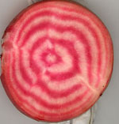
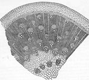
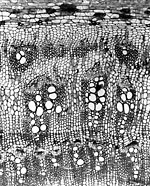

{kind=link}

{kind=link}

{kind=link}
SUCCESSIVE CAMBIA
SUCCESSIVE CAMBIA [ PDF ]
Successive cambia (one form of so-called “anomalous secondary growth,” a term I don’t like) are more common than people realize. Lots of things from beets (ever notice the rings in a beet?) to Bougainvillea have successive cambia, and so the stems contain bands of wood (= secondary xylem) and secondary phloem as well as intervening bands that aren’t wood.
Over the years I dealt with quite a number of families that have this condition and described those findings in detail (see Biography and Publications)—Gnetaceae, Welwitschiaceae, Menispermaceae, Convolvulaceae, Acanthaceae Chloanthaceae, Agdestidaceae, Aizoaceae, Amaranthaceae, Basellaceae, Nyctaginaceae, Phytolaccaceae, Barbeuiaceae, and Simmondsiaceae, to name a few. And I noticed that the papers which dealt with this phenomenon had quite divergent ideas about how it worked, developmentally. Blind men and elephant time. Nobody seemed to notice this. Perhaps nobody wanted to think about it very much. Analyzing what was going on was difficult. Most of the plants with successive cambia have rather hard stems and so wood anatomists cut them on a sliding microtome. But the softer tissues at the outside of the stem that would show how this phenomenon happens are sacrificed, or lost, in the process. One could cut the soft tissues with another method (such as embedded in paraffin and cut on a rotary microtome) but then one doesn’t see what is happening in the hard tissues inward from those early stages. By oversoftening the stems (using hardness for sliding microtome sectioning as the criterion for “oversoftening”), then embedding them in paraffin and using some other tricks described in a 1982 paper of mine [ PDF], I was able to cut sections that included both hard and soft tissues well and showed the complete sequence of development and mature products.
I had a method that potentially could deal with sectioning problems in all but the most problematic stems. My survey of the caryophyllalean families provided an additional incentive. When I was close to finishing my survey of families of “core Caryophyllales,” I decided there was no way that I could avoid dealing with the problem of successive cambia. The family that made me think that was Nyctaginaceae. Esau and Cheadle had written a paper in which they had some ideas about this phenomenon Bougainvillea, and there were some others (on Mirabilis, the “four-o-clock”). I felt a need either to validate some earlier interpretations (one of them at most, maybe!) or else explain what was happening. In addition to looking at Nyctaginaceae, I looked at all of my earlier slides, as well as a few from other people. I felt I had a new interpretation, and I had to test it against all of the materials I had. And I decided that my interpretation was right, although different groups might show some minor variations. So here was an old problem that hadn’t been solved. A drawing by Solereder (of a Pisonia stem) made about a century before I decided to work on successive cambia as a question had never been explained. Can one find a question in science that has lain dormant for a century and answer it? Sure. I’m not intimidated by old questions in plant anatomy that have not been solved. The same explanation as in Nyctaginaceae applied to Aizoaceae and, as shown in the 2007 paper [ PDF ], to other families. But successive cambia are not just an ontogenetic phenomenon. They are an evolutionary phenomenon, in which vascular tissue units can be surrounded by parenchyma, and the various tissues easily varied in three-dimensional arrangement and in abundance. A literally flexible growth system, that occurs in climbing woody plants (Bougainvillea) more often than one would expect. In the r paper I wrote, I described many fascinating correlations: how, for example, prolonged phloem longevity (because each of the successive cambia can continue to produce secondary phloem indefinitely) is correlated with lower vessel density in Pisonia and allied genera, compared with vessel density in wood of dicots with a single cambium. That paper, by the way, is an example of a review paper that is not a review paper—it tries to break new ground, and to explain a phenomenon that has not been appropriately understood, how it works, why it is a successful and persistent evolutionary strategy. Review papers may demonstrate the author’s knowledge of the literature in a particular field, but they have little use—they go out of date quickly, and they don’t represent new ideas, hypotheses, or questions.